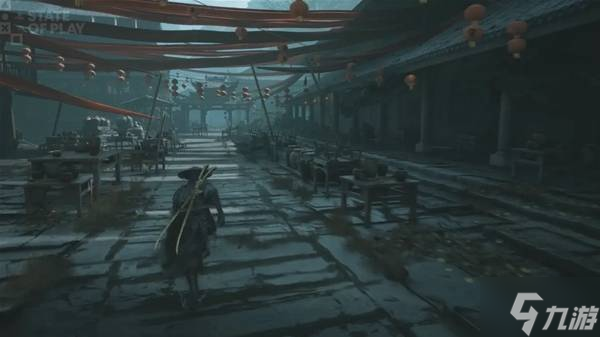
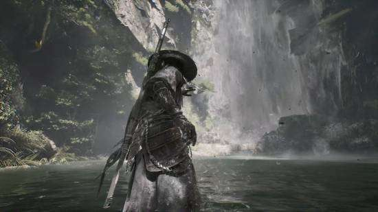
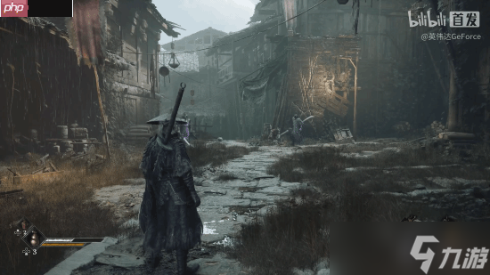
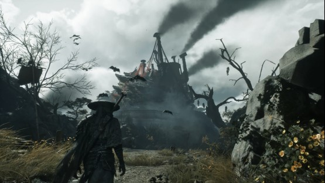
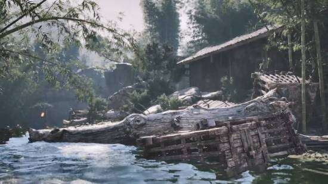

Phantom World · 武林 · 功夫朋克 · 公开场景观察
Steam 官方文案将传统武侠、冷兵器、机械义肢、工业遗迹与朋克幻想并置；项目公开宣传常用 “功夫朋克”（Kungfupunk）概括这种风格。现有一手文字不足以把世界严格对应到现实某一朝代，也不足以确认“明面朝廷/地下武林”的完整政治结构。
魂活动于武林；世界中存在居民、支线任务、隐藏道路、机关和相互牵连的秘密。
传统中式建筑、工业遗迹、机械构件与超自然敌人共同出现；其历史年代与政治归属仍待官方说明。
以下为对 State of Play 画面的整理。区域名称、数量和功能仍可能随官方后续资料或正式版调整。

画面呈现阴雨中的市井小镇，并出现马车、商铺与多名人物。其是否为固定枢纽及势力中心，公开资料暂未完整确认。

画面可见山谷、瀑布、水域与敌人；区域在正式流程中的位置和用途尚未确认。

画面可见仓库式空间、人偶与雾气。其与系列旧作人物或事件的联系属于编辑联想，官方尚未明确。

画面呈现高耸工业结构、管道与机械装置；“禁忌实验”及主线用途尚无足够一手资料确认。

画面可见湖面、竹林和船只移动；水下秘密、敌人与强制交通方式均不作确定结论。
其他区域信息
待官方后续公开
既有页面把杀气描述为武学根基，并以天书残卷、机关植入和怪面之乱串联出一套历史因果。这些内容需要回到系列旧作原始文本逐条核验；《影之刃零》是否完整沿用，官方尚未明确。
本站原有清单包括“组织”、正道联盟、十一人阁、蜃楼、暗魔天堡（魔家）与圣母娘娘势力。当前没有足够的新作一手资料证明“六大势力”是《影之刃零》的官方数量或分类，各势力首领、从属关系、历史事件及角色归属均暂不作新作事实使用。
官方商店确认：主角魂被诬陷杀害师父，心脏遭受重创，仅剩六十六天寿命；他在武林中遭到追杀并试图揭开阴谋。公开商店文案没有给出师父的中文姓名，也没有确认本站原先整理的三方势力关系。
以下时间点来自本站既有系列资料整理，不是《影之刃零》官方编年史。作品名称、年份、项目决策和剧情承接关系仍需补充原始来源。
本站既有旧作资料把“冥使”描述为组织内的高阶身份，并记录了人数、代号和层级。新作是否沿用同一规则尚未确认。
本站既有旧作资料将“鬼差”与组织及杀气改造联系。其在新作中的定义、战力和制作方式尚未确认。
Steam 官方商店列出了 Memory Flowers（记忆之花）这一名称，但没有在商店文案中说明其一定是收集品或具体机制。
“表里武林”作为本页原有结构概念，当前缺少足够一手来源，不作为《影之刃零》官方术语。
评论与讨论